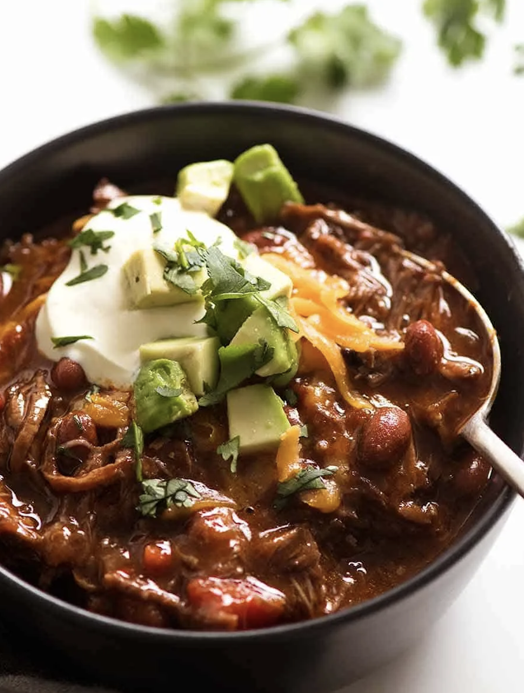

Slow Cooker Pulled Beef
Home

With deeper, even more complex flavours than classic
Chilli Con Carne, beef is slow cooked in a rich,
heavily spiced sauce until it’s fall apart tender,
then gently teased apart before being tossed back
into the sauce.
Ingredients
Spice Mix
- 2 tsp cumin
- 2 tsp onion powder
- 2 tsp garlic powder
- 2 tsp paprika
- 2 tsp taco seasoning (or similar)
- salt and pepper
Beef Chilli
- 1 - 2kg beef (chuck steak or brisket)
- 1 tbsp minced garlic
- 1 brown onion, diced
- 1 tin red kidney beans, drained
- 1 tin crushed tomatoes
- 2 tbsp tomato paste (1 sachet)
- 1 C beef bone broth or stock
Method
Prep
- Turn slow cooker on low.
- Add the beans, crushed tomatoes, tomato paste and beef broth.
- Stir until combined.
Brown and Saute
- Combine Spice Mix ingredients in a bowl, then rub it over the beef
(add any remaining mix to the slow cooker.)
- Heat oil in frying pan and brown beef on both sides.
- Transfer to the slow cooker.
- Add more oil if needed and fry the garlic and onion until tender.
- Transfer to the slow cooker.
- Add a splash of water to the frying pan to deglaze, then pour into slowcooker.
Cook
- Slow cook on low for 8 hours.
- Remove beef from the slow cooker and shred with two forks.
- Thicken sauce if needed by mixing together 2 tbsp cornflour and 2 tbsp cold water before adding to the slow cooker.
- Return shredded beef to the slow cooker and gently stir.
- Enjoy!